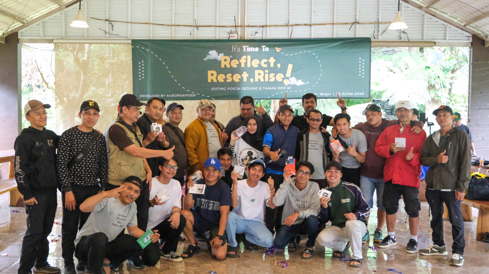
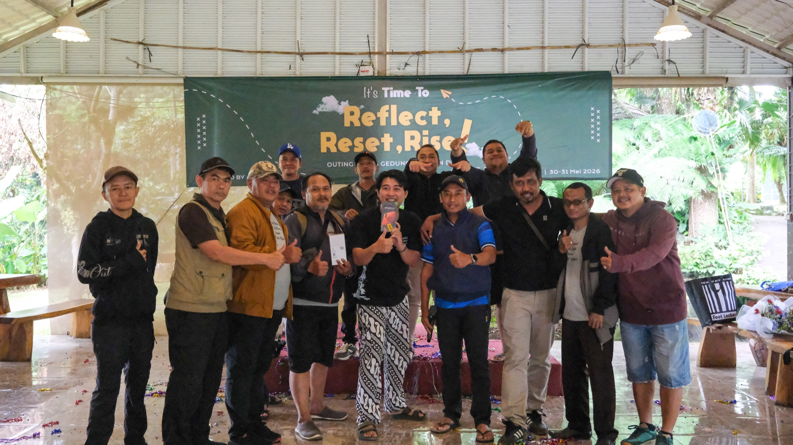

Decode
Find the simple human truth inside the business plan.
Annual Kick Off Alignment · Momentum
We turn targets, priorities, and leadership direction into a shared story people can see themselves inside.
Build this kick off ↗
STARTA kick off should do more than announce the plan. It should make direction feel collective, action feel possible, and the first step feel immediate.
Find the simple human truth inside the business plan.
Turn priorities into moments, participation, and memorable language.
Give every team a role, a voice, and a tangible first commitment.
Build assets and rituals that keep the energy moving after the room clears.

THE OUTCOME / CLARITY · OWNERSHIP · MOMENTUM